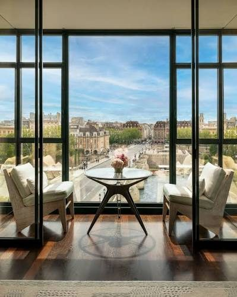

LVMH's showpiece above La Samaritaine — just 72 rooms, Dior Spa, and the most coveted new address in Paris.
Every era of Paris gets one new hotel that everyone wants, and this era's is Cheval Blanc. LVMH rebuilt the top of La Samaritaine — the Art Deco department store at Pont-Neuf — into just 72 rooms and suites hanging directly over the Seine.
The scale is the point. Seventy-two keys in a city where the grand palaces run three hundred means the service ratio is absurd, the public spaces never feel public, and a river-view room actually means the river filling your window. The Dior Spa is the brand's flagship, the pool is one of the longest in Paris, and Langosteria on the seventh floor is the Italian table the whole city fights over.
This is the booking for clients who've done the classic palaces and want the modern one — design-forward, fashion-adjacent, and genuinely hard to get in season. As a Fora advisor I book it with palace-level perks, and lead time matters more here than anywhere else in Paris.

Seventy-two keys. A fraction of the size of the classic palaces — the service ratio and privacy are unlike anything else at this level in Paris.
The Dior Spa. The house flagship, with a 30-metre pool — the best spa-and-swim combination in the city.
Langosteria over the river. The Milan seafood institution's Paris outpost, seven floors up with the Seine and Pont-Neuf below.
It books out absurdly early. Seventy-two rooms and the whole world asking — for spring, summer or fashion weeks, this is a months-ahead conversation, not a weeks-ahead one.
Modern, not gilded. If your Paris dream is chandeliers and Louis XV, the Ritz or the Crillon is the better match — this is contemporary glamour.
The location rewards walkers. Pont-Neuf puts the Louvre, the Marais and Saint-Germain all within fifteen minutes on foot — the most walkable base of any Paris palace.
The hardest reservation among the Paris palaces, and the one that feels most like the city's future — book it early and let me handle the rest.
Rates through me are identical to booking direct — the perks are not. As a Fora advisor, my clients receive a space-available upgrade, daily breakfast, and a hotel credit — plus my direct line to the team on property before and during your stay.
Check Availability